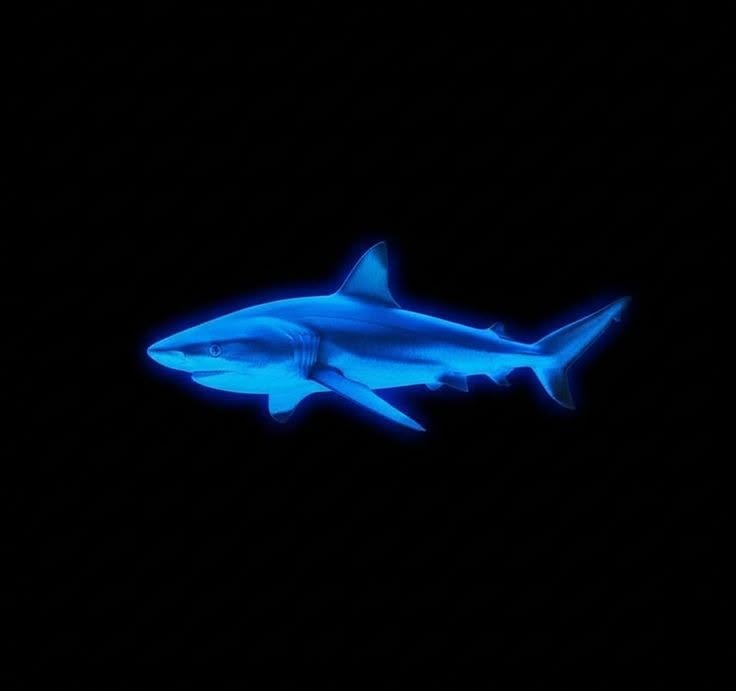

Haaien en ik
Haaien worden vaak gezien als angstjagende dieren die graag een mens op het menu hebben staan, maar zo zie ik het helemaal niet. Ik vind deze unieke dieren zo stoer maar ook heel schattig. Ik heb er zelf wel eens een baby haai geaaid in 2014 en weet nog precies hoe de huid voelt op mijn hand. Zij hebben een heel groffe huid, net als schuurpapier.
Je zult wel denken, waarvoor dient deze groffe huid eigenlijk. Nou deze dient voornamelijk voor snelheid, bescherming en camouflage! De huid bestaat uit tienduizenden microscopische tandjes die huidtanden of placoïde schubben genoemd worden. Deze bestaan letterlijk ook uit tandweefsel met tanddbeen en een harde laag glazuur.
Waarom heb ik dus gekozen om mijn onderwerp te laten gaan over haaien? Dat weet ik ook niet precies! Ik weet alleen dat deze dieren mij een sterk gevoel van bewondering geven. Maar wist jij dat haaien een bedreidge diersoort zijn? Daar wil ik ook de nadruk op leggen en laten zien hoe ironisch het is dat deze "gevaarlijke dieren" degenen zijn die in gevaar zijn.
Per jaar sterven gemiddeld 10 personen aan een haaienaanval, in vergelijking tot 100 miljoen haaien die elk jaar sterven door de mens. Wie vormt dus het echte gevaar?
Haaien als bedreigde diersoort.
Hoewel haaien al 400 miljoen jaar overleefd hebben, zijn zij inderdaad een bedreigde diersoort. Dit is een probleem dat begon in de jaren 70, met de opkomst van grootschalige visserij. Hun vinnen worder gebruikt voor soep en medicijnen. Hierdoor jaagt de mens veel op haaien, en planten de dieren zich niet snel voort, dus de aantallen verminderen snel. Inmiddels is de haaien populatie afgenomen met ruim 70%.

Wat zijn de gevolgen?
Haaien zijn cruciaal voor de gezondheid van de oceaan. Deze roofdieren zijn aan de top van de voedselketen in het mariene ecosysteem en houden de balans. Zij voeden zich met zwakke of zieke diere en voorkomen dat bepaalde vispopulaties te groot worden en het ecosysteem overbelasten. Doordat haaien jachten, blijven de prooidieren sterk en alert.
Haaien beschermen verder ook nog leefgebieden. Zij zorgen ervoor dat grazende dieren niet te lang op dezelfde plaats, vooral kwetsbare gebieden zoals koraalriffen of zeegrasvelden, alles opeten. Zeegras is heel effectief in het opslaan van C02 via fotosynthese, dit gebeurt 35 keer sneller dan een tropisch regenwoud.
Hoe kunnen wij ze beschermen?
Wij kunnen de haaien beschermen door een eind te brengen aan overbevissing, geen haaienproducten te kopen en bewustwording te verspreiden. Ik kom niet vaak iemand tegen die haaienvinnensoep eet, maar dat is ook een van de dingen die wij juist niet moeten doen. Controleer verder of er geen dierlijke producten zitten in cosmetica / verzorgingsproducten. Je kunt ook ervoor zorgen dat jij de strand schoon achterlaat en vrij van plastic dat in de zee terecht kan komen. Als jij je houdt aan deze simpele stappen kunnen wij het samen oplossen!
Verschillende soorten
Er bestaan tussen de 400 en 500 bekende haaisoorten op aarde. Het exact aantal weten wij eigenlijk niet. Maar elk jaar wordt er nog ten minste 1 nieuwe haaisoort ontdekt!
Alle soorten zijn verdeeld in 12 verschillende orden, waarvan 4 zijn uitgestorven.
Nu hebben wij nog de Grondhaaien, Varkenshaaien, Grauwe haaien, Makreelhaaien, Bakerhaaien, Zaaghaaien, Doornhaaiachtigen en de Zee-engelen. Wil jij meer weten over de verschillende soorten klik maar hier!
Klik hier om te zien hoe diep de verschillende haaien kunnen zwemmen.
Depthometer